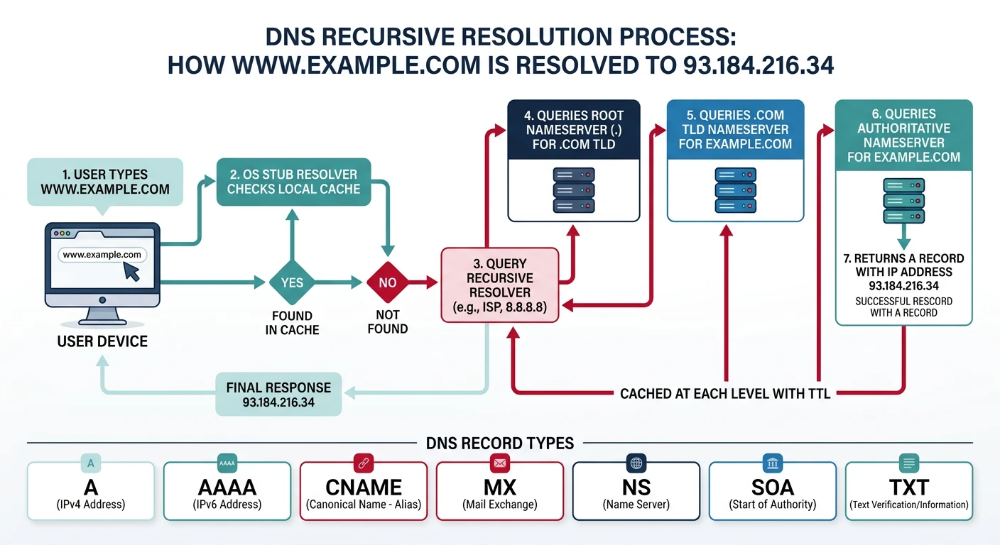
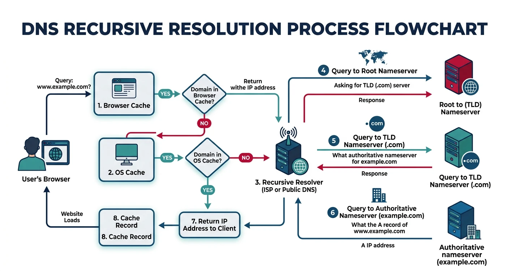
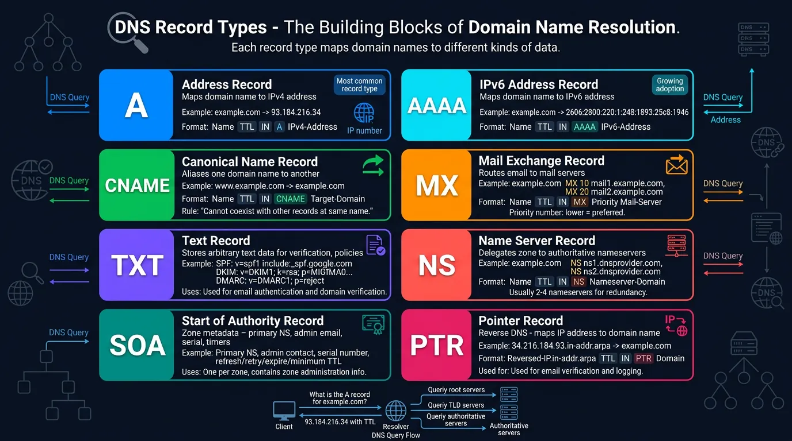
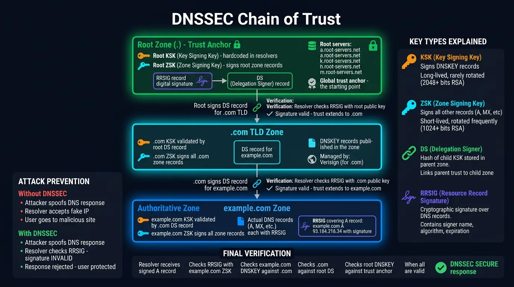
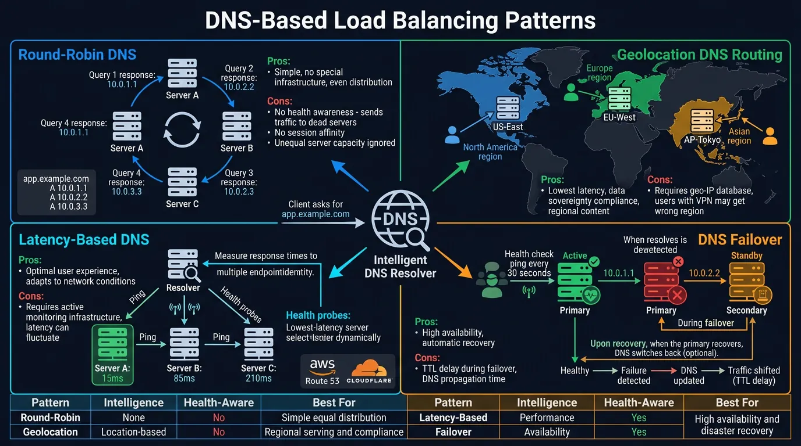

Explore the Domain Name System—the internet's distributed phonebook. Learn DNS resolution, record types, caching, DNSSEC security, and how DNS enables global-scale distributed systems.
The Domain Name System (DNS) translates human-readable domain names (like www.example.com) into IP addresses (like 93.184.216.34). Without DNS, you'd need to memorize numeric addresses for every website.

DNS translates human-readable domain names into numeric IP addresses that computers use to communicate
Series Context: This is Part 8 of 20 in the Complete Protocols Master series. DNS operates at the Application Layer (Layer 7) and is fundamental to how the internet works.
The Phone Book Analogy:
Phone Directory → DNS System
────────────────────────────────────────────────
Person's Name → Domain Name (google.com)
Phone Number → IP Address (142.250.80.46)
Area Code → TLD (.com, .org, .net)
Local Directory → Authoritative Nameserver
411 Information → Recursive Resolver
Your Contact List → DNS Cache
Key Difference:
Phone books are centralized → DNS is distributed!
DNS is a globally distributed, hierarchical database
with no single point of failure.
Scale:
• 13 root server addresses (but hundreds of instances)
• ~350 million domain names registered
• Billions of DNS queries per day
DNS Namespace Hierarchy
Hierarchy
The DNS Tree Structure
DNS Namespace Hierarchy:
. (Root)
│
┌──────────────┼──────────────┐
com org net
│ │ │
┌────┴────┐ example cloudflare
google amazon
│
┌──┴──┐
www mail
Full Qualified Domain Name (FQDN):
www.google.com.
│ │ │ └── Root (usually implicit)
│ │ └───── Top-Level Domain (TLD)
│ └──────────── Second-Level Domain
└──────────────── Subdomain (hostname)
TLD Types:
• gTLD: Generic (.com, .org, .net, .info)
• ccTLD: Country Code (.uk, .de, .jp, .in)
• New gTLD: (.app, .dev, .cloud, .blog)
• Infrastructure: (.arpa for reverse DNS)
Note: Domain names are case-insensitive!
www.Google.COM = www.google.com
DNS Resolution Process

DNS recursive resolution: queries travel from browser cache through root, TLD, and authoritative nameservers
Resolution
How DNS Resolution Works
DNS Resolution: What happens when you type www.example.com
1. Browser Cache Check
└── Browser has its own DNS cache (Chrome: chrome://net-internals/#dns)
2. OS Cache Check
└── Operating system resolver cache
3. Query Recursive Resolver (ISP or 8.8.8.8)
└── If cached, return immediately
4. Query Root Nameserver (.)
└── "I don't know example.com, but .com is handled by..."
└── Returns .com TLD nameserver addresses
5. Query TLD Nameserver (.com)
└── "I don't know www.example.com, but example.com is handled by..."
└── Returns example.com authoritative nameserver
6. Query Authoritative Nameserver (example.com)
└── "www.example.com is at 93.184.216.34"
└── Returns the A record with IP address
7. Response Cached at Each Level
└── TTL determines how long to cache
8. Browser Connects to IP Address
Total time: Typically 20-120ms (uncached)
Cached: <1ms
Recursive vs Iterative Queries
Two Types of DNS Queries:
RECURSIVE QUERY (Client → Resolver)
──────────────────────────────────────────────
Client asks resolver: "What's the IP of www.example.com?"
Resolver does ALL the work and returns final answer.
Client Recursive Resolver
│ │
│─── "www.example.com?" ────>│ (resolver queries root, tld, auth)
│ │
│<── "93.184.216.34" ────────│
│ │
ITERATIVE QUERY (Resolver → Nameservers)
──────────────────────────────────────────────
Resolver asks each server, gets referrals, follows them.
Resolver Root Server
│ │
│─── "www.example.com?" ────>│
│<── "Try .com servers" ─────│
Resolver .com TLD Server
│ │
│─── "www.example.com?" ────>│
│<── "Try ns1.example.com" ──│
Resolver example.com Auth Server
│ │
│─── "www.example.com?" ────>│
│<── "93.184.216.34" ────────│
In Practice:
• Your computer → Resolver: RECURSIVE
• Resolver → DNS Servers: ITERATIVE
# DNS resolution demonstration
import socket
def dns_lookup(hostname):
"""Demonstrate basic DNS lookup using system resolver"""
print(f"\nDNS Lookup for: {hostname}")
print("=" * 50)
try:
# Get all address info (IPv4 and IPv6)
results = socket.getaddrinfo(hostname, None)
seen = set()
for result in results:
family, socktype, proto, canonname, sockaddr = result
ip = sockaddr[0]
if ip not in seen:
seen.add(ip)
family_name = "IPv4" if family == socket.AF_INET else "IPv6"
print(f" {family_name}: {ip}")
return list(seen)
except socket.gaierror as e:
print(f" DNS lookup failed: {e}")
return []
# Examples
hostnames = ["google.com", "github.com", "cloudflare.com"]
for hostname in hostnames:
dns_lookup(hostname)
print("\n" + "=" * 50)
print("Note: Results may vary based on your location and DNS resolver")
DNS Recursive vs Iterative Resolution
sequenceDiagram
participant C as Client
participant R as Recursive Resolver
participant Root as Root Server
participant TLD as TLD Server
participant Auth as Authoritative NS
C->>R: Query www.example.com
Note right of C: Recursive query
R->>Root: Query www.example.com
Note right of R: Iterative queries
Root-->>R: Referral to .com TLD
R->>TLD: Query www.example.com
TLD-->>R: Referral to example.com NS
R->>Auth: Query www.example.com
Auth-->>R: A Record 93.184.216.34
R-->>C: Answer 93.184.216.34
Note over R: Cache result with TTL
DNS Record Types

Common DNS record types: A, AAAA, CNAME, MX, TXT, NS, SOA, and PTR each serve distinct purposes
Common Records
Essential DNS Record Types
Record
Purpose
Example
A
IPv4 address
example.com → 93.184.216.34
AAAA
IPv6 address
example.com → 2606:2800:220:1:...
CNAME
Canonical name (alias)
www → example.com
MX
Mail exchanger
10 mail.example.com
TXT
Text (SPF, DKIM, etc.)
"v=spf1 include:_spf.google.com ~all"
NS
Nameserver
ns1.example.com
SOA
Start of Authority
Zone admin info, serial, refresh
PTR
Reverse DNS (IP → name)
34.216.184.93.in-addr.arpa → example.com
# DNS record examples (dig/nslookup commands)
# A Record - IPv4 Address
$ dig example.com A +short
93.184.216.34
# AAAA Record - IPv6 Address
$ dig google.com AAAA +short
2607:f8b0:4004:800::200e
# CNAME Record - Alias
$ dig www.github.com CNAME +short
github.com.
# MX Records - Mail Servers (with priority)
$ dig google.com MX +short
10 smtp.google.com.
20 smtp2.google.com.
30 smtp3.google.com.
# TXT Records - Various purposes
$ dig google.com TXT +short
"v=spf1 include:_spf.google.com ~all"
"google-site-verification=..."
# NS Records - Nameservers
$ dig example.com NS +short
a.iana-servers.net.
b.iana-servers.net.
# SOA Record - Zone Information
$ dig example.com SOA +short
ns.icann.org. noc.dns.icann.org. 2024012001 7200 3600 1209600 3600
# PTR Record - Reverse DNS
$ dig -x 8.8.8.8 +short
dns.google.
Special DNS Records
Advanced Records
Service and Security Records
Service Discovery Records:
SRV Record - Service Location
_service._protocol.domain TTL class SRV priority weight port target
_sip._tcp.example.com. 300 IN SRV 10 5 5060 sipserver.example.com.
_xmpp-server._tcp.example.com. 300 IN SRV 5 0 5269 xmpp.example.com.
Used by: LDAP, Kerberos, SIP, XMPP, Minecraft servers
──────────────────────────────────────────────────────
Security Records:
CAA Record - Certificate Authority Authorization
example.com. CAA 0 issue "letsencrypt.org"
example.com. CAA 0 issuewild ";" # No wildcard certs
example.com. CAA 0 iodef "mailto:security@example.com"
TLSA Record - DANE (TLS Certificate Pinning)
_443._tcp.example.com. TLSA 3 1 1 abc123...
DNSKEY/DS/RRSIG - DNSSEC (covered below)
──────────────────────────────────────────────────────
Email Authentication:
SPF (TXT Record) - Who can send email
"v=spf1 ip4:192.0.2.0/24 include:_spf.google.com ~all"
DKIM (TXT Record) - Email signing
selector._domainkey.example.com. TXT "v=DKIM1; k=rsa; p=MIGf..."
DMARC (TXT Record) - Email policy
_dmarc.example.com. TXT "v=DMARC1; p=reject; rua=mailto:dmarc@example.com"
# DNS record query demonstration
import socket
import struct
def explain_dns_records():
"""Explain DNS record types with examples"""
records = {
"A": {
"purpose": "Maps domain to IPv4 address",
"example": "example.com → 93.184.216.34",
"use_case": "Website hosting, any IPv4 service"
},
"AAAA": {
"purpose": "Maps domain to IPv6 address",
"example": "example.com → 2606:2800:220:1::248",
"use_case": "IPv6-enabled services"
},
"CNAME": {
"purpose": "Alias one domain to another",
"example": "www.example.com → example.com",
"use_case": "Subdomains, CDN integration"
},
"MX": {
"purpose": "Mail server with priority",
"example": "10 mail.example.com",
"use_case": "Email routing"
},
"TXT": {
"purpose": "Arbitrary text data",
"example": "v=spf1 include:_spf.google.com ~all",
"use_case": "SPF, DKIM, domain verification"
},
"NS": {
"purpose": "Authoritative nameservers",
"example": "ns1.example.com",
"use_case": "DNS delegation"
},
"SRV": {
"purpose": "Service discovery",
"example": "_sip._tcp.example.com → sipserver:5060",
"use_case": "VoIP, XMPP, gaming servers"
},
"CAA": {
"purpose": "Certificate authority restrictions",
"example": "0 issue 'letsencrypt.org'",
"use_case": "SSL/TLS certificate control"
}
}
print("DNS Record Types Reference")
print("=" * 70)
for record_type, info in records.items():
print(f"\n{record_type} Record")
print("-" * 40)
print(f" Purpose: {info['purpose']}")
print(f" Example: {info['example']}")
print(f" Use Case: {info['use_case']}")
explain_dns_records()
DNS Caching & TTL
TTL
Time To Live (TTL)
DNS Caching Layers:
1. BROWSER CACHE
Chrome: ~1 minute (internal)
Firefox: Respects TTL (up to 1 hour)
2. OPERATING SYSTEM CACHE
Windows: ipconfig /displaydns
macOS: sudo dscacheutil -cachedump
Linux: systemd-resolved, nscd, dnsmasq
3. RECURSIVE RESOLVER CACHE
ISP resolver or public DNS (8.8.8.8, 1.1.1.1)
Respects TTL from authoritative response
4. AUTHORITATIVE NAMESERVER
Sets the TTL for the zone
TTL Values (in seconds):
──────────────────────────────────────────────
300 (5 min) → Dynamic services, failover
3600 (1 hour) → Typical websites
86400 (1 day) → Stable infrastructure
604800 (1 week) → Very stable records
Trade-offs:
• Low TTL: Fast changes, more DNS traffic
• High TTL: Better caching, slower propagation
Best Practice:
1. Use low TTL before planned changes
2. Make the change
3. Increase TTL after propagation
# DNS cache and TTL commands
# Windows - View DNS cache
ipconfig /displaydns
# Windows - Clear DNS cache
ipconfig /flushdns
# macOS - Clear DNS cache
sudo dscacheutil -flushcache; sudo killall -HUP mDNSResponder
# Linux (systemd) - Clear DNS cache
sudo systemd-resolve --flush-caches
sudo systemd-resolve --statistics
# Check TTL of a record
$ dig example.com +ttlunits
example.com. 21h IN A 93.184.216.34
# Trace full resolution (shows TTL at each step)
$ dig +trace example.com
# Query specific nameserver (bypass cache)
$ dig @8.8.8.8 example.com
$ dig @ns1.example.com example.com
DNSSEC Security
DNSSEC (Domain Name System Security Extensions) adds cryptographic authentication to DNS responses, preventing spoofing and cache poisoning attacks.

DNSSEC chain of trust: cryptographic signatures verify DNS responses from root to authoritative nameserver
DNS Attacks
DNS Security Threats
DNS Security Threats (Why DNSSEC Matters):
1. DNS SPOOFING / CACHE POISONING
Attacker injects false DNS responses into resolver cache
User: "What's the IP for bank.com?"
Attacker: "It's 192.168.1.100 (my malicious server)"
Result: User visits fake banking site
2. MAN-IN-THE-MIDDLE (MITM)
Attacker intercepts DNS queries on local network
WiFi hotspots, compromised routers
3. DNS HIJACKING
Attacker changes DNS settings on router/computer
Malware, compromised ISP
4. DDoS via DNS AMPLIFICATION
Small query → Large response
Attacker spoofs victim IP, floods with DNS queries
Protection Layers:
├── DNSSEC: Authenticates DNS responses
├── DoH (DNS over HTTPS): Encrypts queries
├── DoT (DNS over TLS): Encrypts queries
└── Private DNS: Trusted resolvers (1.1.1.1, 8.8.8.8)
DNSSEC Chain
How DNSSEC Works
DNSSEC Chain of Trust:
1. Root Zone Signs .com
Root publishes DS record for .com
.com's DNSKEY verified by root's signature
2. .com Signs example.com
.com publishes DS record for example.com
example.com's DNSKEY verified by .com's signature
3. example.com Signs Records
All A, MX, TXT records signed with RRSIG
Chain: Root → .com → example.com → www.example.com
↓
Trust Anchor (Root DNSKEY is pre-configured)
DNSSEC Record Types:
─────────────────────────────────────────────────────
DNSKEY: Zone's public signing key
DS: Hash of child zone's DNSKEY (delegation)
RRSIG: Signature for each record set
NSEC/NSEC3: Proof of non-existence
Validation:
1. Resolver gets RRSIG with A record
2. Resolver fetches DNSKEY for zone
3. Resolver verifies signature with DNSKEY
4. Resolver validates DNSKEY with parent DS
5. Chain continues to root trust anchor
# DNSSEC verification commands
# Check if domain has DNSSEC
$ dig example.com +dnssec +short
93.184.216.34
A 13 2 86400 20240301000000 20240215000000 12345 example.com. [signature]
# Get DNSKEY records
$ dig example.com DNSKEY +short
256 3 13 [ZSK public key]
257 3 13 [KSK public key]
# Get DS record from parent
$ dig example.com DS +short
12345 13 2 abc123...
# Full DNSSEC chain validation
$ dig +sigchase +trusted-key=/etc/trusted-key.key example.com A
# Check DNSSEC with external validator
$ dig @8.8.8.8 example.com +dnssec +cd # CD = Checking Disabled
$ dig @8.8.8.8 example.com +dnssec # Full validation
# Online tools:
# - dnsviz.net (visual DNSSEC chain)
# - dnssec-analyzer.verisignlabs.com
DoH and DoT: DNSSEC authenticates but doesn't encrypt. For privacy, use DNS over HTTPS (DoH) or DNS over TLS (DoT). Modern browsers support DoH (Firefox, Chrome), and many public resolvers support both (Cloudflare 1.1.1.1, Google 8.8.8.8).
Advanced DNS Patterns

DNS-based load balancing: round-robin, geolocation routing, latency-based, and failover patterns
Load Balancing
DNS-Based Load Balancing
DNS Load Balancing Techniques:
1. ROUND-ROBIN DNS
Multiple A records, rotated each query
example.com. A 192.0.2.1
example.com. A 192.0.2.2
example.com. A 192.0.2.3
Limitation: No health checking, uneven distribution
2. WEIGHTED ROUND-ROBIN
Traffic percentage control (Route 53, Cloudflare)
server1.example.com A 192.0.2.1 (weight: 70)
server2.example.com A 192.0.2.2 (weight: 30)
3. GEOLOCATION DNS
Route users to nearest datacenter
US users → us-east.example.com
EU users → eu-west.example.com
Asia users → ap-south.example.com
Providers: Route 53, Cloudflare, NS1
4. LATENCY-BASED DNS
Route to lowest-latency server (measured)
5. FAILOVER DNS
Health checks + automatic failover
Primary: 192.0.2.1 (healthy) ← Active
Secondary: 192.0.2.2 (standby)
If primary fails → DNS returns secondary
6. ANYCAST DNS
Same IP advertised from multiple locations
BGP routes to nearest instance
Used by: Root servers, CDNs, Cloudflare
# DNS-based service discovery simulation
import random
class SimpleDNSLoadBalancer:
"""Demonstrate DNS-based load balancing concepts"""
def __init__(self, name):
self.name = name
self.records = []
def add_record(self, ip, weight=1, region=None, healthy=True):
"""Add a server to the pool"""
self.records.append({
"ip": ip,
"weight": weight,
"region": region,
"healthy": healthy
})
def round_robin(self):
"""Simple round-robin (rotate through all)"""
healthy = [r for r in self.records if r["healthy"]]
if not healthy:
return None
# In real DNS, this rotates the order
return [r["ip"] for r in healthy]
def weighted(self):
"""Weighted selection"""
healthy = [r for r in self.records if r["healthy"]]
if not healthy:
return None
# Build weighted pool
pool = []
for r in healthy:
pool.extend([r["ip"]] * r["weight"])
return random.choice(pool)
def geolocation(self, user_region):
"""Geo-based selection"""
# Find server in user's region
for r in self.records:
if r["region"] == user_region and r["healthy"]:
return r["ip"]
# Fallback to any healthy server
healthy = [r for r in self.records if r["healthy"]]
return healthy[0]["ip"] if healthy else None
def failover(self):
"""Primary/secondary failover"""
for r in self.records:
if r["healthy"]:
return r["ip"]
return None
# Demo
print("DNS Load Balancing Simulation")
print("=" * 50)
lb = SimpleDNSLoadBalancer("api.example.com")
lb.add_record("192.0.2.1", weight=3, region="us-east", healthy=True)
lb.add_record("192.0.2.2", weight=1, region="eu-west", healthy=True)
lb.add_record("192.0.2.3", weight=2, region="ap-south", healthy=True)
print("\n1. Round-Robin DNS:")
print(f" All IPs returned: {lb.round_robin()}")
print("\n2. Weighted Selection (5 queries):")
for i in range(5):
print(f" Query {i+1}: {lb.weighted()}")
print("\n3. Geolocation DNS:")
for region in ["us-east", "eu-west", "ap-south", "unknown"]:
result = lb.geolocation(region)
print(f" User in {region}: {result}")
print("\n4. Failover (mark primary unhealthy):")
lb.records[0]["healthy"] = False
print(f" With primary down: {lb.failover()}")
Hands-On Exercises
Self-Assessment
Quiz: Test Your Knowledge
What type of record maps a domain to an IPv4 address? (A record)
What's the difference between recursive and iterative queries? (Recursive does all work, iterative returns referrals)
What does TTL control? (How long DNS records are cached)
What attack does DNSSEC prevent? (DNS spoofing/cache poisoning)
What record type is used for email server routing? (MX record)
What's the purpose of CNAME records? (Alias one domain to another)
What does DoH stand for? (DNS over HTTPS)
How does anycast DNS work? (Same IP advertised from multiple locations)
# Practice: DNS investigation commands
# 1. Basic lookup
dig google.com
# 2. Specific record types
dig google.com A
dig google.com AAAA
dig google.com MX
dig google.com TXT
dig google.com NS
# 3. Trace full resolution path
dig +trace google.com
# 4. Check DNSSEC
dig google.com +dnssec
# 5. Query specific nameserver
dig @8.8.8.8 google.com
dig @1.1.1.1 google.com
# 6. Reverse DNS
dig -x 8.8.8.8
# 7. Short output (just the answer)
dig google.com +short
# 8. Check propagation (multiple resolvers)
for ns in 8.8.8.8 1.1.1.1 9.9.9.9; do
echo "=== $ns ===" && dig @$ns example.com +short
done
# Online tools:
# - mxtoolbox.com (comprehensive DNS checks)
# - dnschecker.org (global propagation)
# - intodns.com (DNS health check)
Summary & Next Steps
Key Takeaways:
DNS is a globally distributed, hierarchical database mapping names to IPs
Resolution involves recursive resolvers and iterative queries through the hierarchy
Record types: A (IPv4), AAAA (IPv6), CNAME (alias), MX (mail), TXT (text), NS (nameserver)
TTL controls caching duration—balance between freshness and performance
DNSSEC provides cryptographic authentication to prevent spoofing
DoH/DoT encrypt DNS for privacy
DNS load balancing: Round-robin, weighted, geo, latency, failover, anycast